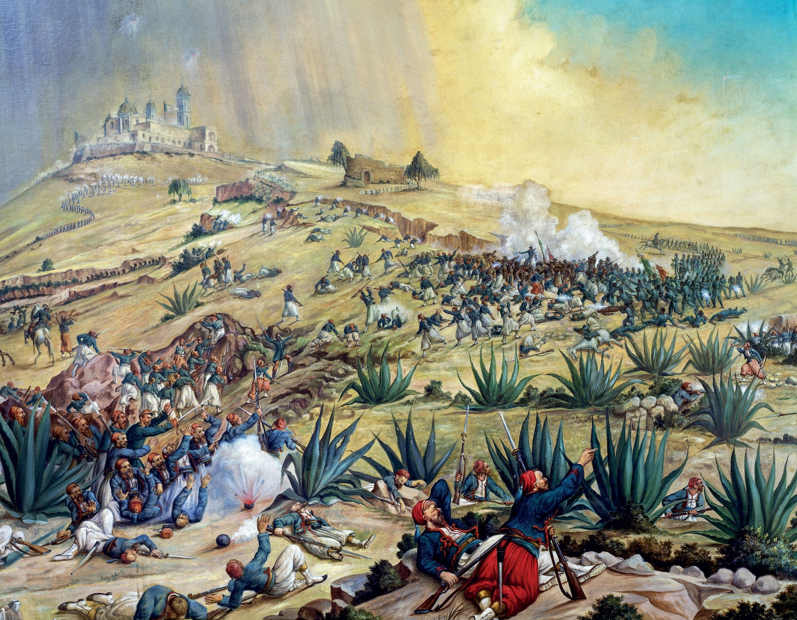
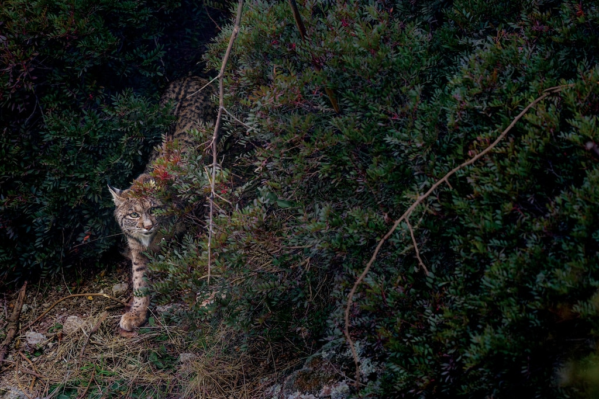

Science
New method delivers life-saving drugs to the brain-using sound...
Read

HISTORY MAGAZINE
The victorious origins of Cinco de Mayo
Read

Science
Fruits and vegestables are less nutritious than they used to be
Read
Today's Picks

Vaquita porpoises may still recover if illegal fishing yard

4 ECO friendy ways to keep pests out of your yards

How this feline became the biggest comeback in cat conservation
This American's Supreme Court fight defined U.S. citizenship

Ro see Saudi Arabia, start with this 'magical' gateway to Mecca

Forest as 'carbon offsets'?Climate change has other plans